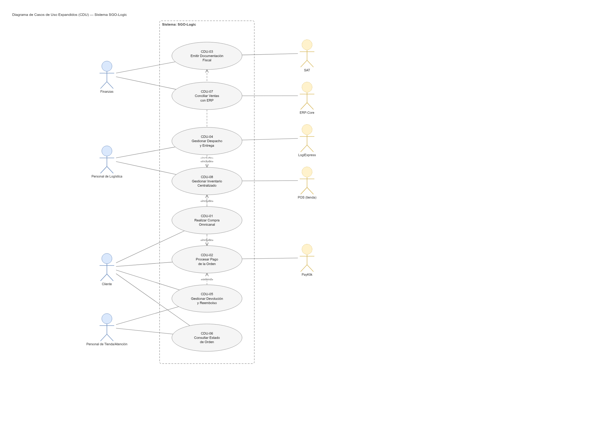
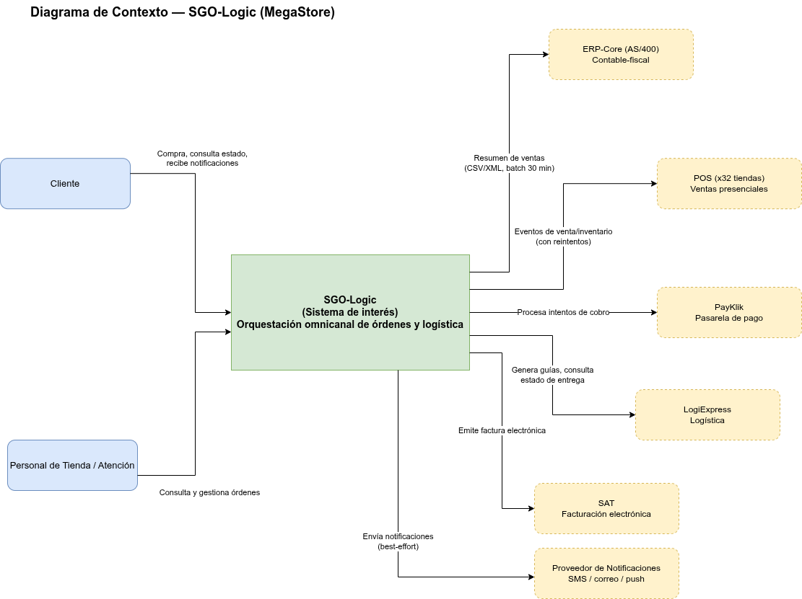
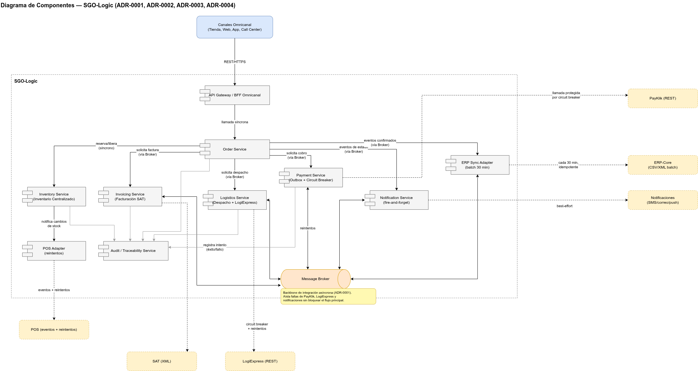
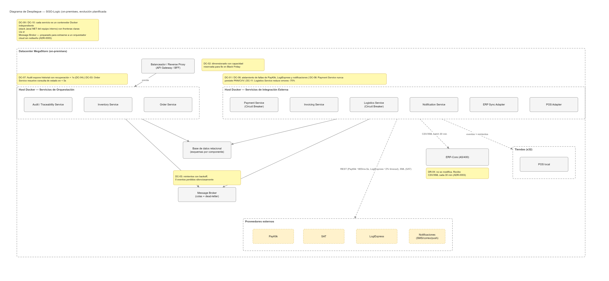
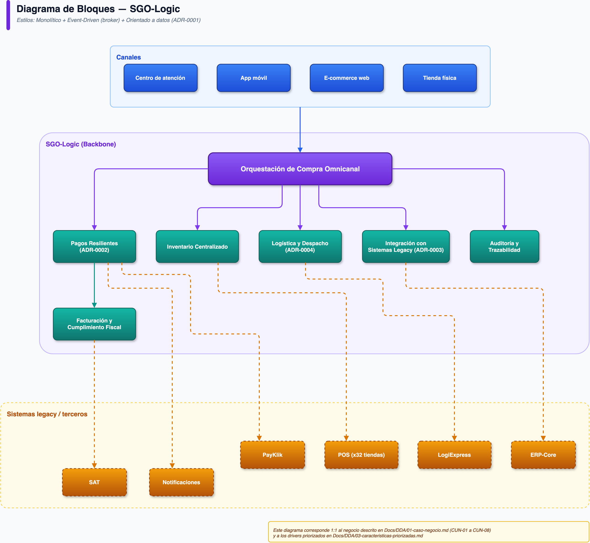
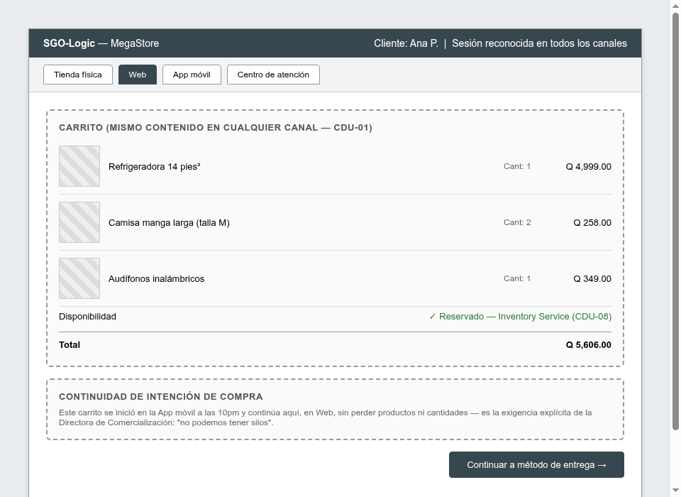
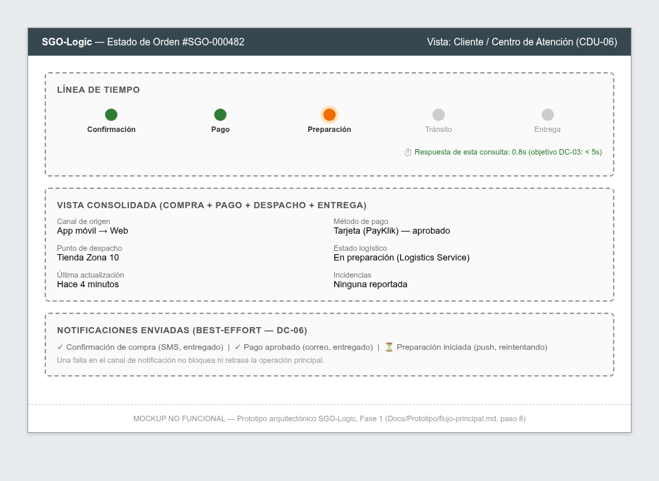

Equipo de Arquitectura de Software — Sección A, Grupo 3
| Tiempo | Sección |
|---|---|
| 5 min | Contexto de negocio |
| 5 min | Stakeholders y drivers |
| 10 min | Alternativas y decisión arquitectónica |
| 5 min | Casos de uso |
| 10 min | Vistas de la arquitectura |
| 5 min | Cómo se atienden los drivers críticos |
| 5 min | Prototipo y evolución |
| 5 min | Preguntas y defensa |
Cada tienda, el e-commerce, el inventario y la logística operan como silos. Una venta puede requerir llamadas telefónicas, hojas de cálculo y conciliaciones manuales posteriores.
— Directora de Comercialización
Una compra puede iniciar en un canal y terminar en otro, sin perder continuidad. SGO-Logic es la capa de orquestación que lo hace posible — sin reemplazar el ERP-Core ni los POS.
No modificar ERP-Core (AS/400) ni los POS de tienda
PayKlik y LogiExpress vigentes — no se reemplazan proveedores
USD 150,000 inversión inicial; ≤ USD 1,200/mes de operación
On-premises obligatorio, con migración planificada a nube
Domina Java/.NET y Docker básico — sin Kubernetes
Black Friday en noviembre; ruta viable desde el primer mes
| Stakeholder | Preocupación principal |
|---|---|
| Carlos Méndez — Gerente de TI | Continuidad en picos de demanda, mantenibilidad por equipo interno |
| Ana Lucía Fuentes — Directora de Finanzas | Veto sobre decisiones que reduzcan trazabilidad o cumplimiento fiscal |
| Roberto Quezada — Jefe de Logística | Reducir errores de despacho en 70% |
| Junta Directiva | Presupuesto, decisión irrevocable de no tocar ERP-Core/POS |
| Cliente final | Experiencia consistente, consulta de estado < 5s |
Criterios explícitos: valor, riesgo, urgencia, impacto arquitectónico (1-5 cada uno, máx. 20).
| Driver | Qué es | Prioridad |
|---|---|---|
| DC-01 | Disponibilidad ante falla de PayKlik | 20/20 |
| CDU-01/08 | Inventario centralizado en tiempo real | 19/20 |
| DC-02 | Elasticidad 8x (Black Friday) | 19/20 |
| DC-07 | Auditabilidad / trazabilidad | 17/20 |
| DC-05 | Confiabilidad de integración | 17/20 |
Componentes internos comunicados mayormente vía un broker de mensajería (pagos, logística, notificaciones, sincronización ERP), con llamadas síncronas solo donde se necesita consistencia inmediata (inventario, consultas).
Contenedores Docker independientes, base de datos relacional con esquemas separados — preparado para extraerse a servicios independientes sin rediseño.
| Alternativa | Por qué se descartó |
|---|---|
| Monolito tradicional (sin separación interna) | Alto acoplamiento; dificulta aislar fallas de terceros y mantenibilidad a largo plazo |
| Microservicios completos + Kubernetes desde el inicio | El equipo no tiene esa competencia hoy; riesgo de no llegar a tiempo a Black Friday; excede presupuesto operativo |
| Monolito modular + broker (elegido) | Balance entre lo que el equipo puede operar hoy y la necesidad de desacoplar componentes críticos |
Ninguna decisión partió de una preferencia tecnológica — todas responden a un driver priorizado.
8 CUN (casos de uso de negocio) en 01-caso-negocio.md se expanden a 8 CDU con flujo principal, alternativas, excepciones y reglas de negocio — cada uno trazable a sus drivers de calidad y restricción.
| CDU | Nombre | Actor principal |
|---|---|---|
| CDU-01 | Realizar Compra Omnicanal | Cliente |
| CDU-02 | Procesar Pago de la Orden | Cliente |
| CDU-04 | Gestionar Despacho y Entrega | Personal de Logística |
| CDU-05 | Gestionar Devolución y Reembolso | Cliente / Atención |
| CDU-08 | Gestionar Inventario Centralizado | Personal de Logística |

Límite del sistema SGO-Logic, con actores secundarios (PayKlik, LogiExpress, SAT, ERP-Core, POS) y relaciones «include»/«extend».



Cada nodo anotado con el driver de calidad (DC-NN) que justifica su diseño.

Antecedente 45 minutos de caída de PayKlik en el Black Friday anterior = USD 150,000 en ventas perdidas. Se espera hasta 8x el tráfico normal.
Ana Lucía Fuentes (Finanzas) tiene poder de veto sobre cualquier decisión que reduzca la trazabilidad.
Decisión irrevocable de la Junta Directiva. El ERP-Core solo acepta CSV/XML en ventanas de 30 minutos.
Adaptador de sincronización batch, idempotente, que agrupa eventos confirmados y expone detalle transaccional por lote — reduce la investigación manual de diferencias que existe hoy.


Mockups no funcionales — carrito unificado entre canales y vista consolidada de estado de orden.
| Concepto | Límite | Cómo se respeta |
|---|---|---|
| Inversión inicial | USD 150,000 | Componentes open-source (broker), sin licenciamiento comercial |
| Operación mensual | ≤ USD 1,200 | On-premises, sin Kubernetes ni servicios cloud administrados en Fase 1 |
Los componentes ya están desacoplados por el broker (consecuencia de ADR-0001) — migrar a nube significa reubicar contenedores, no rediseñar el sistema.
| Decisión | Costo aceptado |
|---|---|
| ADR-0002 — Pagos | Cliente puede ver "pago en proceso" unos minutos durante una falla de PayKlik |
| ADR-0003 — ERP | Reportes gerenciales nunca en tiempo real (ventana de hasta 30 min) |
| ADR-0005 — Despliegue | Sin autoescalado real en Fase 1; capacidad reservada de antemano |
Cada decisión responde a un driver real del caso — no a una preferencia tecnológica.